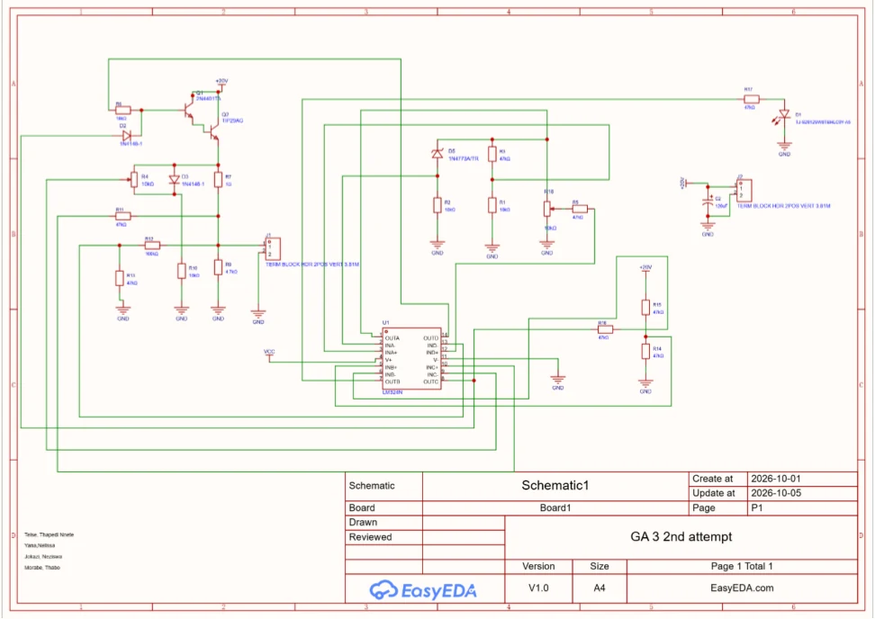

Skills demonstrated
Electronic schematic capture, PCB component placement, routing, review of signal/current paths and 3D visualisation.
PCB schematic capture, top and bottom track layouts, and 3D views for an analogue control board using EasyEDA.

Cover combines an original submitted engineering design image with portfolio typography.
The group prepared the circuit schematic and an alternate PCB layout using EasyEDA, documenting the schematic, top and bottom routing views, and 3D board renderings. The written reflection describes challenges with schematic capture, component placement and routing, and recommends improved polarity markings and considering a double-sided PCB for a future revision.
Electronic schematic capture, PCB component placement, routing, review of signal/current paths and 3D visualisation.
The submitted PDF contains rendered design images and a reflection. It does not contain an editable EasyEDA project, fabrication outputs or measured board performance.
Select a design view to inspect the screenshots submitted for GA3.

Understanding the required layout redesign, building the schematic and learning EasyEDA routing and placement tools.
Consider a double-sided board to simplify routing and add clearer polarity identification to support reliable assembly and inspection.
Group project acknowledgement: Neziswa Jokazi, Nnete Thapedi Teise, Thabo Morabe and Nelissa Yana. Individual task ownership was not specified in the documents.
These pages describe the supplied coursework. Portfolio viewers and budget calculations are browser-based reconstructions, not manufacturing tests or live hardware measurements.